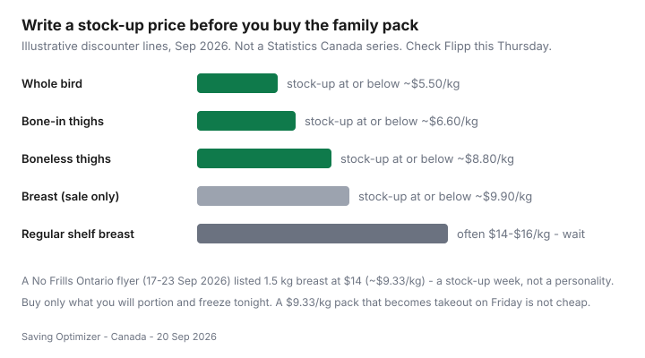

Food & Groceries · Canada
What to cook when chicken hits a stock-up price: a Canadian sale-protein playbook
Canadians still toss a family pack of sale chicken in the cart with no Thursday plan. By Friday it is the same baked breast, by Sunday it is takeout, and the “deal” is a compost bag. Flyer chicken is only cheap if you already know the stock-up price, the freeze recipes, and the food-safety steps before you hit the meat case.
This is a Canadian discounter playbook: write a personal threshold, cook from Flipp cycles, stretch the bird with lentils and rice, and count cost per eaten serving. It is not a recipe blog and not sports-nutrition advice. Cost-per-gram ranking lives in cheap high-protein meals.
Disclosure: Meal-kit trials are an optional contrast when a week explodes — not the default protein plan. Freezer bags, sheet pans, and an instant-read thermometer are kitchen-tool offer types. Saving Optimizer may earn a commission if we later add partner links. No partnerships are claimed with grocers or meal-kit brands. Nothing here is required to click.
Key takeaways
- Write a stock-up line for whole bird, bone-in thighs, boneless thighs, and breast. Buy the pack only when Flipp beats that line.
- September 2026 discounter snapshots still treated sale breast near $8.80–$9.90/kg as a win; regular $14–$16/kg is a wait. A No Frills Ontario flyer (17–23 Sep 2026) listed 1.5 kg breast at $14 (~$9.33/kg).
- Cook or portion and freeze the same night. Unlabelled bags are how sale chicken becomes takeout.
- Stretch plates with dry lentils, chickpeas, and rice so one tray covers more dinners than it looks.
- Thaw in the fridge. Cook poultry to 74°C. Track dollars per plate you actually ate.
Know your personal “stock up” chicken price
Open your notes app and keep four lines. Update them when the flyer moves, not when a neighbour quotes 2019. Illustrative discounter starting lines for September 2026 — not a Statistics Canada series:
| Cut | Treat as a stock-up when | Usual wait zone |
|---|---|---|
| Whole bird | At or below ~$5.50/kg | Anything that costs like boneless breast |
| Bone-in thighs / drums | At or below ~$6.60/kg (~$3/lb) | Family packs you will not portion tonight |
| Boneless thighs | At or below ~$8.80/kg | When breast is cheaper after yield — rare |
| Boneless breast | At or below ~$9.90/kg | Regular $14–$16/kg at full-service banners |
Thursday still prints the loss leader. Clip it in Flipp, then name dinners — sales → meals → list. If the pack is only cheap because you ignored $/kg, you did not stock up. You decorated the cart.

Batch recipes that freeze well
You do not need twelve cuisines. You need two or three methods that survive the freezer:
- Poach and shred. Cover a family pack, simmer, shred, freeze flat in meal bags. Later: tacos, rice bowls, soup.
- Sheet-pan thighs. Salt, paprika or a cheap spice blend, roast. Eat two tonight; freeze the rest without sauce.
- Chili or stew. Chicken plus a can or a cup of cooked beans. Stew freezes; breaded cutlets do not.
- Carcass stock. If you bought a whole bird, the bones are a second meal, not trash.
- Leave one flex night. Eggs, frozen dumplings, or a meal-kit trial if the week exploded. Compare that kit’s per-serving dollars to the thigh plate before you subscribe.
Portioning, labels, and freeze-flat bags are the whole “system.” Details sit in meal prep on a Canadian budget.
Stretching with legumes and grains
Sale chicken plus dry lentils is how a $12 tray becomes five dinners instead of two disappointed adults. Chicken-lentil soup, chickpea curry with leftover shreds, and half-meat taco filling are Canadian pantry food — especially if the pulses came from an independent grocer. Rice, oats, and frozen veg are the bridges so you do not buy a new cuisine every Thursday.
If the household will not eat beans, do not moralize. Stretch with eggs and yogurt instead, and keep the bird for three dinners, not five. Plant-protein sourcing is in cheap plant proteins.
Food safety for bulk thawing
Same-night SOP: fridge thaw, not the counter. About a day per 2–2.5 kg. Cook poultry to 74°C. Freeze what you will not eat in 24 hours. Slimy chicken is not a coupon.
Health Canada and CFIA-style guidance is boring on purpose. Cold-water thaw only in a leak-proof bag, water changed every 30 minutes, cook immediately. Microwave thaw only if it goes straight into the pan. Do not refreeze raw chicken that sat in the danger zone. Leftovers: fridge a few days, or freeze. When a Flashfood tray is the stock-up, the same rules apply — freeze the same night.
Pairing sale chicken with cheap produce weeks
Do not force imported berries onto a thigh week. Pair the bird with cabbage, carrots, onions, and frozen broccoli — the produce that survives a Canadian January. When peppers and clamshell greens are the luxury line, skip them. Out-of-season fruit still showed up in the August 2026 CPI (fresh fruit +4.7% year over year; Statistics Canada Daily, 14 Sep 2026). Frozen vs fresh math is its own guide.
Tracking cost per cooked serving
Write it once: package price ÷ plates eaten. A $14 tray that became four dinners is $3.50. The same tray that became two dinners and a bin is $7, plus the pizza. Bone-in yield is lower; if you only count boneless ounces in your head, you will think thighs “failed.”
Meal kits are the contrast, not the hero. A $12–$14 kit serving can be rational on a brutal Tuesday. It is not cheaper than rice, frozen veg, and a $9.33/kg breast you already portioned. Kitchen tools that actually get used — a sheet pan, freezer bags, a $15 thermometer — beat another marinade bottle.
Sources & date stamps
- Public No Frills Ontario flyer listings for 17–23 Sep 2026: 1.5 kg chicken breast at $14 (~$9.33/kg) — example week, verify locally.
- Existing site snapshots (Sep 2026) for sale breast near $8.80–$9.90/kg and regular $14–$16/kg — still check the till.
- Statistics Canada Daily, 14 Sep 2026: food from stores +2.8% year over year in August 2026; fresh fruit +4.7%.
- Health Canada / CFIA-style poultry practice: fridge thaw; cook to 74°C; do not leave raw poultry at room temperature.
Frequently asked questions
What is a good stock-up price for chicken in Canada?
There is no national number. Write your own line from four weeks of Flipp: many discounter households treat boneless thighs around $8.80/kg and sale breast around $9.90/kg as stock-up, and wait when breast is $14–$16/kg. A No Frills Ontario flyer for 17–23 Sep 2026 listed 1.5 kg breast at $14 — about $9.33/kg. Recheck this Thursday.
Which chicken recipes freeze well?
Shredded poached chicken, sheet-pan thighs, chili or stew, leftover fried rice, and carcass soup freeze better than breaded cutlets or sauced stir-fries that turn soggy. Portion tonight, label the cut and date, freeze flat.
How do I thaw a family pack safely?
Thaw in the fridge, not on the counter. Plan about a day per 2–2.5 kg. Sealed-bag cold-water thaw works if you change the water every 30 minutes and cook immediately. Cook poultry to 74°C. Do not guess from colour.
Should I buy a meal kit when chicken is on sale?
Usually no. A meal-kit serving often lands well above a homemade thigh-and-rice plate. Keep kits as a booked flex night when the week explodes, not as the protein strategy.
How do I track cost per cooked serving?
Package price divided by the number of plates you actually ate — not the hopeful count on the tray. Bone-in has a lower yield. If two portions became compost, those dollars still sit on the remaining plates.